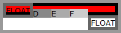
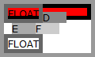

RD8007: IE Opera 计算 shrink-to-fit 的宽度时会考虑浮动元素的宽度
标准参考
shrink-to-fit 可以理解为 "收缩至合适" ，代表了浏览器对于计算后宽度为 auto 时的非替换浮动元素宽度计算所要遵循的标准。此外除了非替换浮动元素，对非替换绝对定位元素、非替换行内块元素的宽度为 auto 时也遵循此计算方式。
根据 W3C CSS2.1 规范中的描述，shrink-to-fit 的宽度计算方法与 'table-layout' 特性为 'auto'（即自动表格布局）时对于单元格的宽度计算方法类似。大致为：
- 计算格式化内容时除了发生明确的换行外不发生换行的时首选宽度（preferred width），以及首选最小宽度（preferred minimum width），比如，尝试所有可能的换行。而 CSS2.1 没有定义精确的算法。
- 其次，在这种情况下，找出可用宽度（available width），这个宽度为包含块减去 'margin-left'、'border-left-width'、'padding-left'、'padding-right'、'border-right-width'、'margin-right'以及所有相关滚动条的宽度。
综上所述：
shrink-to-fit 的宽度 = min ( max (首选最小宽度, 可用宽度) , 首选宽度)
关于 shrink-to-fit 的更多资料，请参考 CSS2.1 规范 10.3.5 Floating, non-replaced elements 中的内容。
问题描述
IE6 IE7 IE8 Opera 中对 shrink-to-fit 计算时会考虑浮动元素的宽度，这其中包含非替换浮动元素、非替换绝对定位元素、为替换行内块元素。
造成的影响
IE6 IE7 IE8 Opera 中浮动元素参与 shrink-to-fit 宽度计算的特点将可能造成布局上的不兼容。如果页面仅在 IE 中进行调试，则极有可能造成在其他浏览器出现折行、内容丢失等现象。
受影响的浏览器
| IE6 IE7 IE8 Opera |
|---|
问题分析
以下按照非替换浮动元素、非替换绝对定位元素、非替换行内块元素分别进行分析。
浮动元素的 shrink-to-fit
分析以下代码：
<style>
* { margin:0; padding:0; font:12px Verdana; }
</style>
<div style="width:400px;">
<div id="A" style="float:left; border:5px solid #999;">
<div id="B" style="float:left; width:40px; border:5px solid #666;">FLOAT</div>
<div id="C" style="border:5px solid; padding:5px; background:red;">
<div id="D" style="float:left; width:30px; background:#888;">D</div>
<div id="E" style="float:left; width:30px; background:#AAA;">E</div>
<div id="F" style="float:left; width:30px; background:#CCC;">F</div>
</div>
<div id="G" style="float:left; width:40px; border:5px solid #666;">FLOAT</div>
</div>
</div>
上面代码中，【A】为最外层容器，左浮动，没有设置 'width'，则为默认的 'auto'。
【A】中包括一个左浮动元素【B】，一个普通流中的容器【C】，及另一个左浮动元素【G】。其中【C】内又包含了三个左浮动元素【D】、【E】、【F】。
在各浏览器中的运行效果如下：
| IE6 IE7 IE8 Opera | Firefox Chrome Safari |
|---|---|
|  |  |
首选根据 W3C 规范计算 首选最小宽度、可用宽度、首选宽度 这三个宽度的值：
- 首选宽度（preferred width）：在【A】中，【B】与【G】脱离了文本流，不再占有空间，【C】位于正常流中，【C】中的三个元素虽均为浮动元素，但【C】仍然具有宽度，为 3 x 30px = 90px，【C】的左右边框宽度为 2 x 5px = 10px，所以首选宽度为 90px + 10px = 100px；
- 首选最小宽度（preferred minimum width）：尝试将【A】的包含块设至最小，此时【A】中可以发生换行的元素均已折行，此时的【A】中最宽的为【B】与【G】的所占宽度，即 2 x 5px + 40px = 50px；
- 可用宽度（available width）：【A】的包含块为 width:400px 的DIV元素，则可用宽度为 400px。
下面根据第一节中的等式得出：
shrink-to-fit 的宽度 = min ( max ( 50px , 400px ) , 100px ) = 100px。
即根据 W3C 规范【A】的宽度应该为 100px。
而本例中：
- Firefox Chrome Safari 的计算正确，【A】的宽度为 100px；
- IE Opera 在计算首选宽度时，已脱离文本流的浮动元素的宽度也参与到宽度计算中。
绝对定位元素的 shrink-to-fit
分析以下代码：
<div style="position:absolute; padding:5px; background:#CCC;">
<div style="float:left; width:50px; height:50px; background:#777;">POS</div>
<div style="background:#AAA;">IN-FLOW</div>
</div>
上面代码中，一个 'width' 为默认的 auto 的绝对定位元素中包含一个 50x50 的左浮动元素及一个普通流中的块级元素。
在各浏览器中的运行效果如下：
| IE6 IE7 IE8 Opera | Firefox Chrome Safari |
|---|---|
 |
 |
与上节相同，绝对定位元素的 shrink-to-fit 的宽度 = min ( max ( 【IN-FLOW】的宽度 , 包含块的宽度 ) , 【IN-FLOW】的宽度 ) = 【IN-FLOW】的宽度，即 56px。
这里可以看到 IE6 IE7 IE8 Opera 对于 'shrink-to-fit' 仍然考虑浮动元素所占宽度。
行内块元素的 shrink-to-fit
分析以下代码：
<style>
* { margin:0; padding:0; font:12px Verdana; }
.ib { display:inline-block; }
html* .ib { display:inline; }
</style>
<div class="ib" style="padding:5px; background:#CCC;">
<div style="float:left; width:50px; height:50px; background:#777;">POS</div>
<div style="background:#AAA;">IN-FLOW</div>
</div>
上面代码中，一个 'width' 为默认的 auto 的绝对定位元素中包含一个 50x50 的左浮动元素及一个普通流中的块级元素。
在各浏览器中的运行效果如下：
| IE6 IE7 IE8 Opera | Firefox Chrome Safari |
|---|---|
|
|
IE6 IE7 IE8(Q) 不支持 'display:inline-block'，但是 'display:inline-block' 会触发该元素的 hasLayout 特性，之后再为其设置 'display:inline' 后即可达到类似 CSS 中' display:inline-block' 的效果。
与第一节相同，行内元素的 shrink-to-fit 的宽度 = min ( max ( 【IN-FLOW】的宽度 , 包含块的宽度 ) , 【IN-FLOW】的宽度 ) = 【IN-FLOW】的宽度，即 56px。
IE6 IE7 IE8 Opera 对于 'shrink-to-fit' 仍然考虑浮动元素所占宽度。
解决方案
尽量为非替换浮动元素、非替换绝对定位元素、非替换行内块元素显式地设置一个宽度，防止浏览器在 'width:auto' 时对于 shrink-to-fit 的宽度计算方式不同造成布局上的差异。
参见
知识库
相关问题
测试环境
| 操作系统版本: | Windows 7 Ultimate build 7600 |
|---|---|
| 浏览器版本: |
IE6 IE7 IE8 Firefox 3.6.3 Chrome 5.0.375.7 dev Safari 4.0.5 Opera 10.51 |
| 测试页面: | float_stf.html pos_stf.html ib_stf.html |
| 本文更新时间: | 2010-07-20 |
关键字
float shrink-to-fit width 宽度 浮动 缩 minimum absolute inline-block